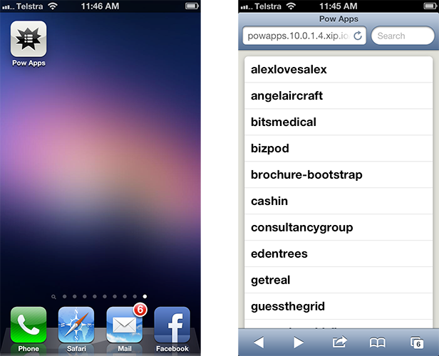

A page with links to all your Pow apps
A page with links to all your Pow apps.
Links are relative to the current domain, so you can get quick access to apps on a network device if you're using xip.io
Jump on your iPhone, iPad, or virtual machine and go to powapps.10.0.0.1.xip.io (sub in the IP to your host's IP), or use locally at powapps.dev
Add to your iOS home screen, or bookmark!
No dependencies. Just clone into ~/.pow
$ cd ~/.pow
$ git clone https://github.com/daz/powapps.git
(Optional) Running this on your host machine will print the Pow Apps xip.io address
$ ifconfig | grep 'inet ' | grep -v '127.0.0.1' | awk '{print "http://powapps."$2".xip.io"}'